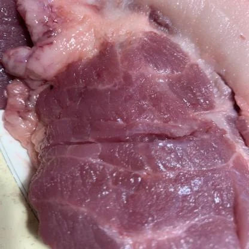
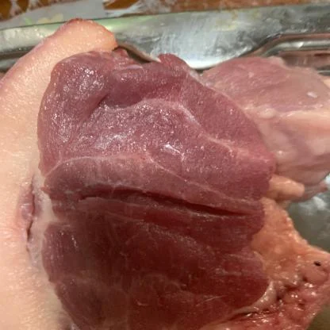
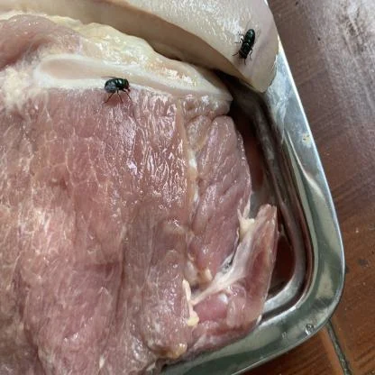
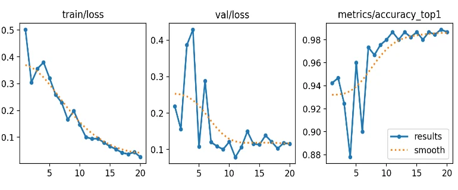
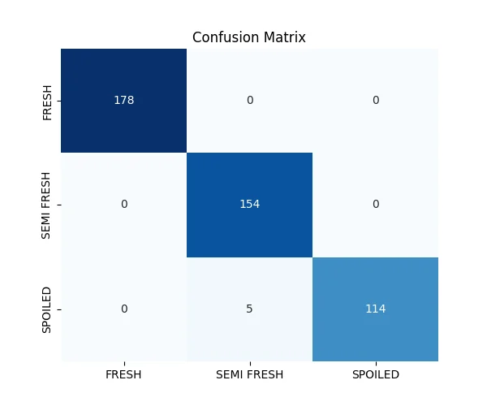
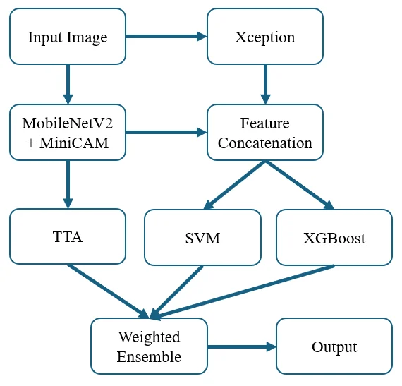
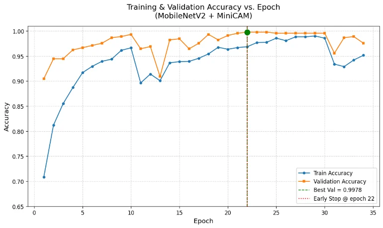
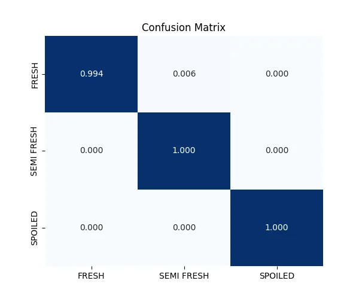
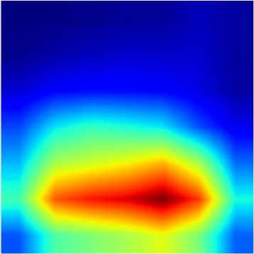

A freshness classifier can score 98.9% while looking at the packaging tray instead of the meat. This study uses Grad-CAM to expose that bias and a lightweight attention + ensemble design to remove it.
Test accuracy99.78%held-out test set
5-fold CV99.66%± 0.23, as reported
Model4.3 Mparameters · 16.5 MB
Speed825.1FPS on an RTX 3050 Laptop
Detect the bias
Grad-CAM shows a YOLO11s-cls baseline deciding from the tray.
Redirect attention
A MiniCAM module in MobileNetV2 focuses on colour, texture and moisture.
Fuse for robustness
MobileNetV2 + TTA, SVM and XGBoost on fused features, combined by tuned weights.
1 · Introduction
Accurate Is Not the Same as Reliable
Spoiled meat brings health risks and large economic losses. Sensory checks and lab tests are slow, costly and destructive, so they cannot support real-time inspection in markets and supply chains.
Computer vision is fast and non-destructive, and pre-trained CNNs report high accuracy. But what do they look at?
Recent works optimize accuracy and efficiency (VGG fusion, IAPO feature selection, compact CNN ensembles, MobileNetV3, Grad-CAM++ fusion).
Whether the learned features rely on meat cues or on spurious context such as trays is rarely analysed or corrected.
The reliability paradox. High accuracy does not guarantee that a model relies on semantically valid cues. In food safety, a model that is right for the wrong reason is a hidden risk when the setting changes.
1 · Introduction
Five Contributions
Grad-CAM-guided bias mitigation
Identify and correct spurious attention to background elements.
MiniCAM attention
Channel and spatial attention in MobileNetV2 toward colour, texture and moisture.
Hybrid ensemble
MobileNetV2+MiniCAM and Xception embeddings, SVM, XGBoost, TTA and grid-optimized weights.
Explainability analysis
Grad-CAM before and after: attention moves to freshness indicators.
Accurate and deployable
99.78% accuracy with 4.3 M parameters, 16.5 MB and 825.1 FPS: suitable for edge inspection in resource-constrained supply chains.
2 · Materials and Methods · Table I, Figs. 1–3
Meat Freshness Image Dataset

Fresh: bright red, glossy, intact marbling

Semi-fresh: duller red, less sheen

Spoiled: brown-grey, slime, flies
trainingtest
Public Kaggle dataset (V. Shanawad): 2,266 RGB beef images from real market settings.
Fixed split 1,815 / 451; 10% of training held out (stratified) for validation.
Provider preprocessing: EXIF orientation, resize to 416 × 416, no augmentation.
3 · Experiments · Tables III–IV, Figs. 5–6
Baseline: YOLO11s-cls Looks Excellent

Loss and top-1 accuracy, 20 epochs

Test confusion matrix
Class
Precision
Recall
F1
Fresh
1.0000
1.0000
1.0000
Semi-fresh
1.0000
0.9686
0.9840
Spoiled
0.9580
1.0000
0.9785
Weighted average
0.9894
0.9889
0.9889
86 layers, C3k2 + SPPF, 5.4 M parameters, 12.1 GFLOPs, 224 × 224 input. Best epoch 19: top-1 98.89%, top-5 100%. The only 5 errors lie on the semi-fresh / spoiled boundary.
A spoiled sample predicted with 100% confidence: the activation peaks on the packaging tray at the right edge, not on the discoloured, slimy meat. Gradients of the class score, averaged per feature map, weight the maps; ReLU keeps only positive influence.
4 · Proposed Method · Fig. 4
The Bias-Mitigated Ensemble

MobileNetV2 + MiniCAM, fine-tuned from ImageNet: the attention-guided backbone.
Both embeddings are concatenated and standardized (scaler fitted on training features only).
SVM (linear) and XGBoost (depth 7, 300 trees) are trained on the fused features.
MobileNetV2 predictions are averaged over 8 TTA views.
A weighted average of the three probability vectors gives the class.
4 · Proposed Method · Eqs. (1)–(2)
MiniCAM: Telling the Network Where to Look
Channel attention: which features matter?
Mc = σ( W2 · ReLU( W1 · AvgPool(F) ) ) ∈ ℝC×1×1
Global average pooling summarizes each channel; a two-layer MLP reduces and restores the channel dimension and a sigmoid gives one weight per channel, boosting colour and texture responses.
Spatial attention: where is the evidence?
Ms = σ( Conv7×7( [AvgPool(F); MaxPool(F)] ) ) ∈ ℝ1×H×W
Average- and max-pooled maps across channels are stacked, convolved with a 7 × 7 kernel and squashed to a weight per location, so the meat surface can outweigh the tray.
Both maps multiply the backbone features: a small, cheap module that changes where MobileNetV2 collects evidence without changing its size class.
4 · Proposed Method · Table II
Test-Time Augmentation: 8 Views of One Sample
0°90°180°270°flipflip + 90°flip + 180°flip + 270°
MobileNetV2 + MiniCAM classifies all 8 views (flip × 4 rotations) and averages the probabilities. Freshness does not depend on orientation, so the average is more stable than any single view.
Illustrative probabilities for one ambiguous semi-fresh / spoiled sample, not values from the paper. The paper grid-searched w₁ ∈ [0.4, 0.6] and w₂, w₃ ∈ [0.15, 0.3] on the validation set only and selected (0.5, 0.3, 0.2).
The best validation accuracy, 99.78%, was reached at epoch 22; early stopping ended training 10 epochs later.
Validation and test images were never augmented. Ensemble weights were chosen on validation data only; the test set was used once for the final report.
5 · Results · Figs. 8–9
Learning Curves and Confusion Matrix

Train / validation accuracy, best 0.9978 at epoch 22

Normalized, validation split
Train and validation curves stay close: no sign of overfitting.
Diagonal 0.994 / 1.000 / 1.000: a single fresh sample is called semi-fresh.
No confusion between semi-fresh and spoiled, the safety-critical boundary where the baseline erred.
5 · Results · Figs. 10–12
Grad-CAM after Bias Mitigation

Sample
Heatmap
Slide the opacity to 0 to see the meat, then back up: red and yellow regions now sit on the meat surface, the cues a food scientist would use, instead of on the tray.
Correctly classified samples; heatmap and image are the two panels of each figure, stacked here.
5 · Results · Table V
Comparison with Other Methods
Metric
Values for other methods are taken from their papers, with different protocols and splits, so they are a reference rather than a head-to-head test. The axis starts at 0.65.
Weights (w₁ / w₂ / w₃) chosen in each fold are shown on the right: the same in four of five folds. Fold 4 contains more ambiguous freshness stages and harder lighting.
6 · Discussion
Discussion and Limitations
Right for the right reason
Accuracy rises a little, but the main gain is that decisions now follow colour, texture and moisture, which matters when trays, lighting or shops change.
Safety-critical errors
The baseline's semi-fresh / spoiled confusions disappear in the proposed model's confusion matrix.
Qualitative bias evaluation
The dataset has no pixel-level tray masks, so bias reduction is shown with Grad-CAM, not measured with a metric.
One dataset
A single public beef dataset; comparisons with other studies use their reported numbers and protocols.
7 · Conclusion
Conclusion and Future Work
Grad-CAM revealed that a high-accuracy baseline relied on packaging trays.
MiniCAM + Xception fusion + SVM / XGBoost + TTA in a weighted ensemble reaches 99.78% accuracy and redirects attention to the meat.
4.3 M parameters, 16.5 MB, 825.1 FPS: practical for non-destructive inspection at markets and retail points.
Next steps
Region-level annotations or weakly supervised segmentation for quantitative bias metrics
The baseline reaches 98.89% top-1 accuracy. Why is it still considered unreliable?
What do the channel and spatial parts of MiniCAM each decide?
Why is test-time augmentation with rotations and flips appropriate for meat images?
Why must the ensemble weights be chosen on the validation set, not on the test set?
Why is the bias reduction evaluated qualitatively in this study?
Show answers
Grad-CAM shows its decisions rest on packaging trays; such a shortcut can fail as soon as the tray or background changes.
Channel attention weights which feature maps matter; spatial attention weights which image locations matter.
Freshness cues do not depend on orientation, so averaging over 8 views reduces the variance of the prediction.
Tuning on the test set would leak it into model selection and overstate the reported accuracy.
The dataset has no pixel-level annotations of tray or background regions to compute a bias metric.
References
Selected References
V. Shanawad, Meat Freshness Image Dataset, Kaggle (2025).
R. R. Selvaraju et al., "Grad-CAM: Visual explanations from deep networks via gradient-based localization," ICCV, 2017.
M. Sandler et al., "MobileNetV2: Inverted residuals and linear bottlenecks," CVPR, 2018.
F. Chollet, "Xception: Deep learning with depthwise separable convolutions," CVPR, 2017.
P. Elangovan et al., "A novel approach for meat quality assessment using an ensemble of compact convolutional neural networks," Applied Sciences, 14(14), 5979, 2024.
See the full article for the complete reference list. Figures are reproduced from the article.
Thank You
Bias Mitigation in Ensemble-Based Meat Freshness Classification Using Grad-CAM
How to cite: Külcü, S., & Balpetek Külcü, D. (2026). Bias Mitigation in Ensemble-Based Meat Freshness Classification Using Grad-CAM. Balkan Journal of Electrical and Computer Engineering, 14, 74–82. doi:10.17694/bajece.1817907